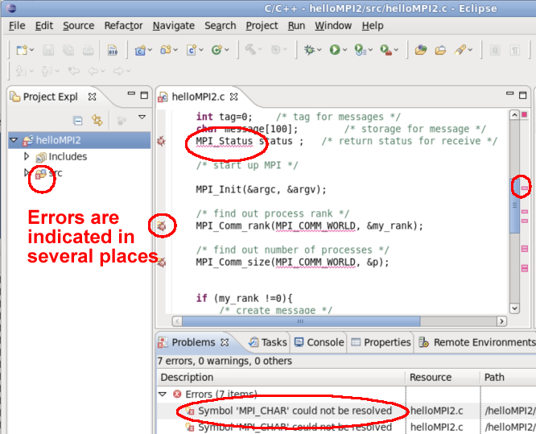
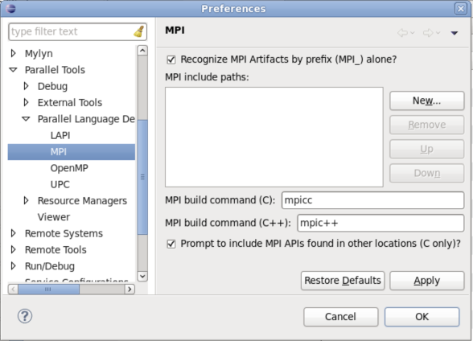
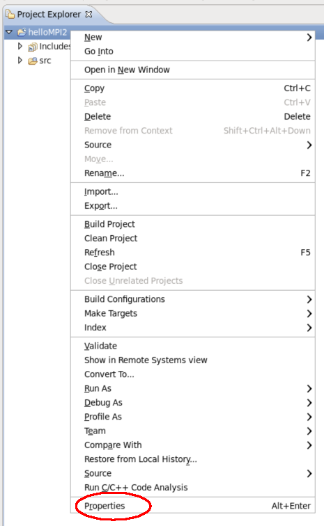
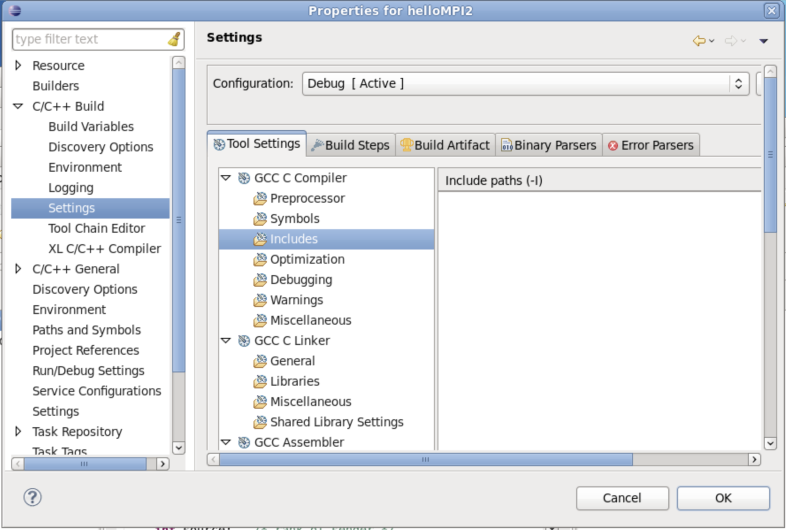
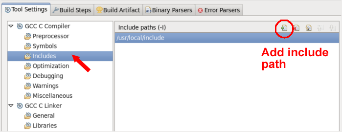
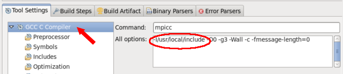
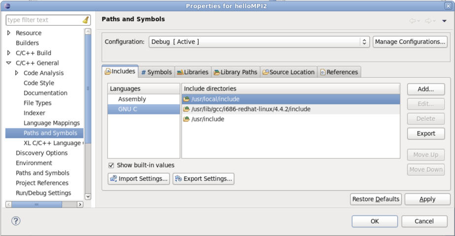

There are several places where you can set up include paths, e.g. MPI include paths, in Eclipse.
For MPI projects, most MPI tools replace the build command with mpicc or a similar command, which sets compiler
options including the include path. So you don't really need the include path set for building an MPI project.
However, Eclipse does need to know where the header file is located, for the indexer to be able to calculate the location of the MPI APIs among other things.
If the indexer can't find your MPI header file, you may see problems like the following:

If your MPI header file is located in a global area that automatically gets included in your project's include path location, such as
/usr/include or /usr/local/include, then things will probably work just fine without further alteration.
Building and indexing will probably both operate correctly.
If you do not use mpicc or a similar build command and need to specify include and libpath information on building and linking, you will probably want to set the PLDT preferences to point to your include path for MPI, in which case, the include and link arguments will be added to your build commands.
If you set the include files in the PLDT Preferences, then when you create a new MPI project, include and link arguments will added to the build commands, the Indexer will find your header files, and new MPI projects will be automatically set up this way.
To open Preferences, use the menu
In the Preferences dialog, select Parallel Tools > Parallel Language Development Tools > MPI.

This preference page also lets you set the build command for new MPI projects. If you add an include path here (via the "New..." button), it will be added to the build command and your Eclipse project will find it as well. It will also make an estimate of the link lib location and arguments.
If you have unchecked the "Recognize MPI Artifacts by Prefix alone", then the "Prompt to include MPI APIs found in other locations (C only)" indicates whether it will ask you if MPI APIS found elsewhere will be considered as artifacts. For example, if you point to <install-loc>/include in the MPI include paths here, but your source files actually include header files from /usr/local/include, it will prompt you to consider these as well during the analysis. This last option is only valid for C projects, not C++ projects.
Hit OK to close the Preferences dialog.
See also PLDT Preferences
However, if you use mpicc or another build command that does this for you, you don't need the include
and link arguments etc., and you may not like this. See General Settings below.
The build settings allow you, for Managed Build projects, to set the include and link information used for the build.
To access the project build settings, bring up the Project Properties dialog
(In the Project Explorer view, Right mouse on the project name, and select, at the very bottom of the context menu, "Project Properties")

and select C/C++ Build > Settings. Under your compiler, select "Includes" and under your Linker, select "Libraries" to view and edit these values. 
To add one, select the "Add..." button

To see how this affects the build command, select e.g. the Compiler option and view the arguments:

If you use a build command (e.g. mpicc) that does includes for you,
you don't need this information added to the build, but you do need Eclipse to be able to find
your header file so that the Indexer, and tools that use this information, can find your header file.
In the project properties, select C/C++ General > Paths and Symbols, and add the include path there. This is used just within Eclipse, not for the build.
They are also used both for Managed build projects as well as Makefile projects.

See Project setup for new MPI projects, including Add the build information manually for more information.